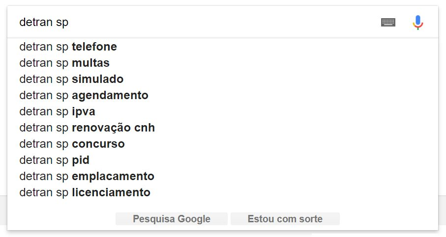

O site do Detran.SP conta com iniciativas interessantes que permitem o acesso rápido a determinadas informações. Por exemplo, a seleção de serviços comuns para cada perfil de usuário (idoso, estrangeiro e etc.) e posições de destaque para os itens mais acessados.
Porém, os usuários ainda encontram dificuldades devido ao conteúdo desorganizado, falta de responsividade e o sistema de busca ineficiente.

Depois de uma breve pesquisa e entrevistas com cerca de 20 usuários, parece comum recorrerem a buscas específicas no Google ou a tutoriais em sites de terceiros para conseguir uma simples informação.
Antes de qualquer suposição, o ideal seria acompanhar de perto, via Google Analytics ou ferramenta equivalente, quais são os serviços mais buscados, o tempo de permanência em casa página, o fluxo de navegação, mapas de calor e etc. Estas informações seriam o guia mais confiável para o processo de reestruturação e redesign do site.
Para este teste, eu presumi uma possível visão de produto e quais seriam as principais necessidades dos usuários.
Referências
Uma das maiores referências de arquitetura da informação é o site do governo britânico. Apesar de não ser a melhor referência no quesito estética, ele segue princípios rigorosos de usabilidade e funcionalidade. Dentre eles estão:
Data → Design — Fazer uso das ferramentas adequadas para identificar necessidades dos usuários e padrões de navegação. Fazer dessas informações a base para qualquer tomada de decisão.
Fazer o mínimo — O governo só deve fazer o que o governo pode fazer. Se outra pessoa está fazendo, conecte-se a ele.
Faça para todos — Tudo deve ser inclusivo e legível, mesmo que comprometa a elegância. Construímos necessidades, não audiências. Não projetamos para uma tela, projetamos para pessoas.
Não construa sites, construa serviços digitais — Na maioria das vezes o serviço não começa e termina em um site, começa com uma pesquisa e termina em um espaço físico. Precisamos projetar para isso.
Comece pequeno e cresça rápido — A melhor forma de construir bons serviços é começar pequeno e aperfeiçoar constantemente. Assim, além de reduzimos o risco, as grandes falhas são improváveis e as pequenas se transformam em aprendizado.

Nas palavras de Ben Terrett, que liderou o design pela Government Digital Service:
"We have tried to strip everything away to make it as legible and intuitive as possible, we've removed everything that gets in the way of fast and easy access to information."
"It's the kind of site that you might only visit once or twice a year, so you shouldn't have to understand how government works to be able to find something out.
"It's the classic example of form follows function. Users are coming to find out what the VAT rate is, or what the minimum wage is – it's not about browsing, so the idea is to get people in and out as quickly as possible."
People come to Gov.uk to find information, not to be sold to, so there’s no need for flashy images or massive calls-to-action (CTAs)
Assim como a referência anterior, o site Data.gov guarda muito conteúdo. Seu design opta pela performance, organização e acesso rápido. Acredito que exemplos assim são ótimos para inspirar sites governamentais e seus serviços.
Solução
A proposta para um sistema como o do DETRAN é focada em arquitetura, performance, com menor uso de imagens e inclusivo. Aqui, o design como estética exige maior apelo.